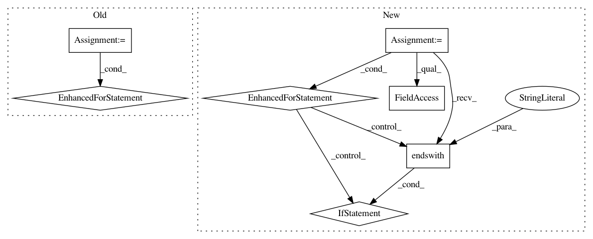

6316edd2aacd0d2a072a07868971049d3f554d58,wandb/internal/file_stream.py,CRDedupeFilePolicy,process_chunks,#CRDedupeFilePolicy#Any#,75
Before Change
def process_chunks(self, chunks):
content = []
for line in [c.data for c in chunks]:
if content and content[-1].endswith("\r"):
content[-1] = line
else:
content.append(line)
chunk_id = self._chunk_id
self._chunk_id += len(content)
if content and content[-1].endswith("\r"):
self._chunk_id -= 1
After Change
s = c.data.split(":")
tstamp = s[0] + ":" + s[1].split(" ")[0]
lines = c.data.split(os.linesep)
for line in lines:
line = line.split("\r")[-1]
if line:
// check for cursor up control character
if line.endswith("\x1b\x5b\x41"):
if flag:
ret.pop()
flag = False
else:
ret.append(tstamp + " " + line + os.linesep)
flag = True
chunk_id = self._chunk_id
self._chunk_id += len(ret)
return {
"offset": chunk_id,
In pattern: SUPERPATTERN
Frequency: 3
Non-data size: 7
Instances
Project Name: wandb/client
Commit Name: 6316edd2aacd0d2a072a07868971049d3f554d58
Time: 2020-08-25
Author: farizrahman4u@gmail.com
File Name: wandb/internal/file_stream.py
Class Name: CRDedupeFilePolicy
Method Name: process_chunks
Project Name: pantsbuild/pants
Commit Name: 791be481c4a0102042dc0a502b08ba5cc6a85987
Time: 2020-06-29
Author: 14852634+Eric-Arellano@users.noreply.github.com
File Name: src/python/pants/backend/python/rules/inject_init_test.py
Class Name: InjectInitTest
Method Name: assert_injected
Project Name: rwth-i6/returnn-experiments
Commit Name: 7247571ab448f9ccf6b392a26df0b8b40b1085eb
Time: 2018-05-16
Author: zeyer@i6.informatik.rwth-aachen.de
File Name: 2018-asr-attention/librispeech/full-setup-attention/tools/collect-train-text.py
Class Name:
Method Name: